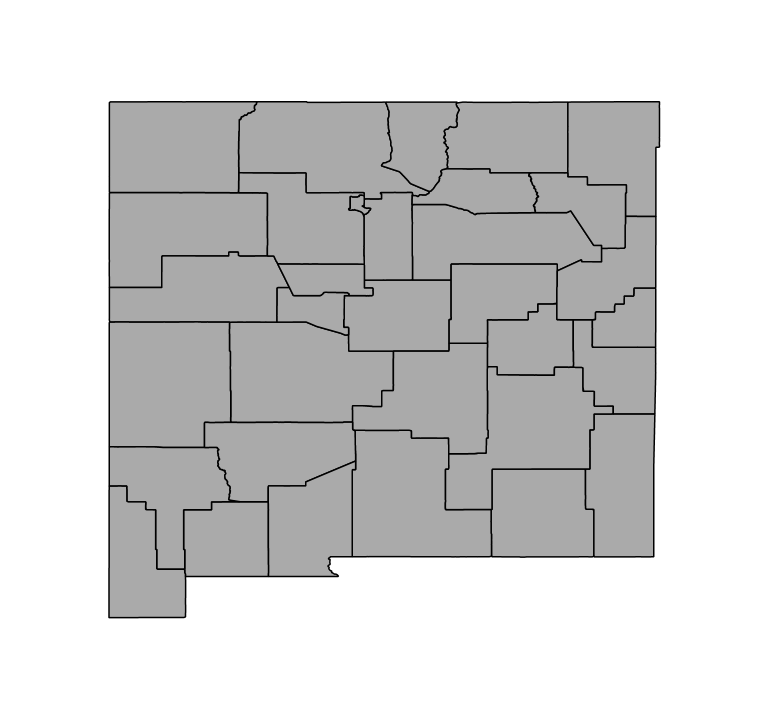
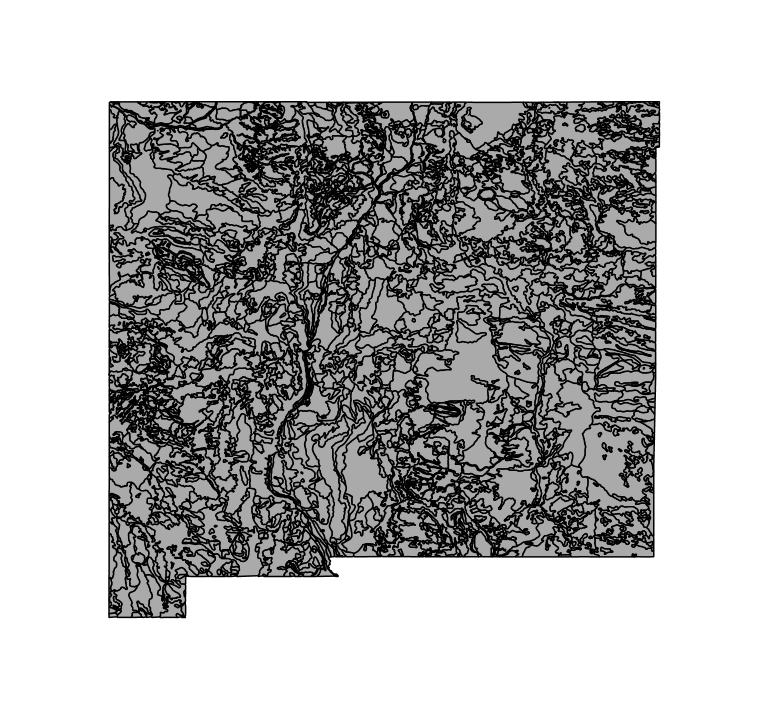
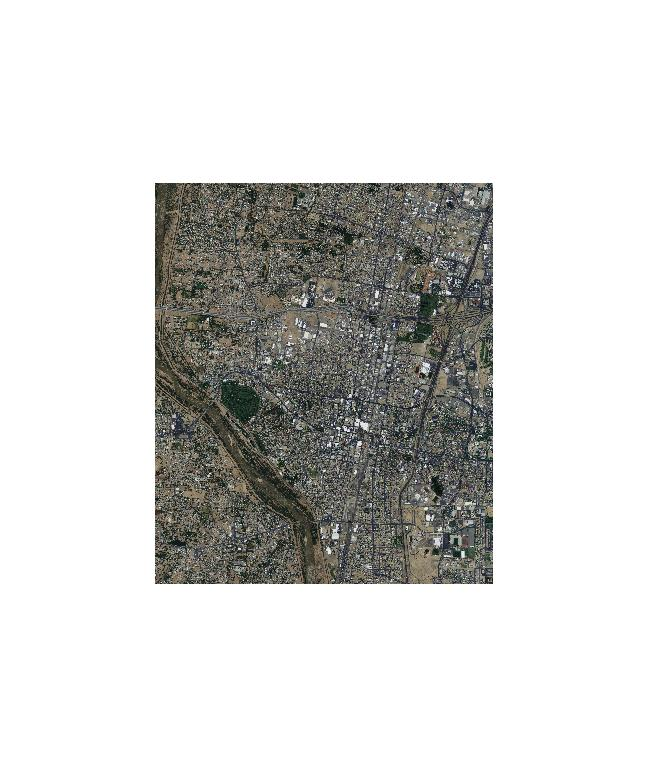
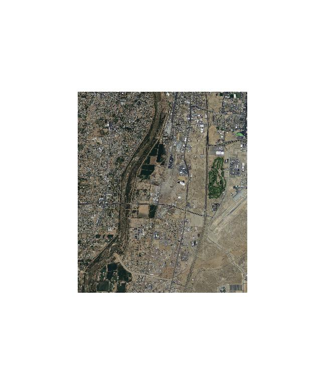
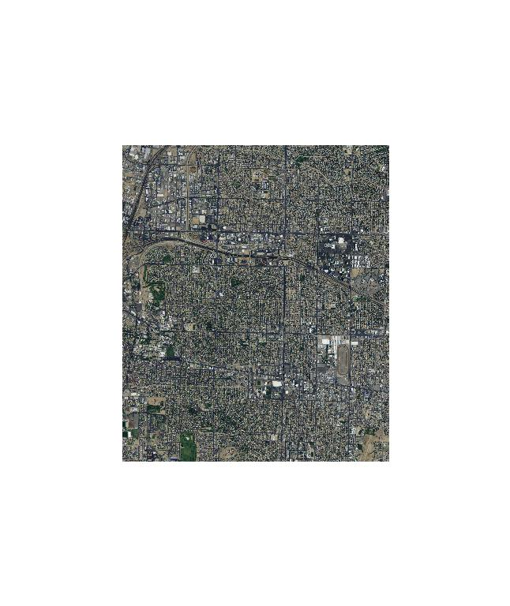

Question 1
What command would you use to list the contents of a directory on a linux system?
"ls"
Question 2
What command would you use to read the “manual page” for a specific command?
"man"
1: NM Counties (2007_fe_35_county00)

2: NM State outline (tl_2010_35_states10)
3: NM State Contours (nm_statsgo_09)

4: Albuquerque Image (ne_13_1_20110523)

5: Albuquerque Image (se_13_1_20110523)

5: Albuquerque Image (nw_13_1_20110522)
